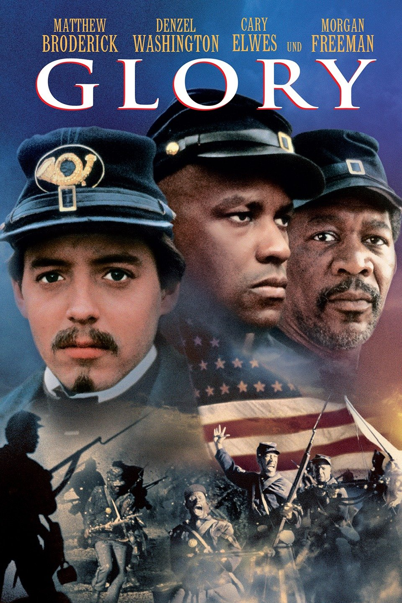
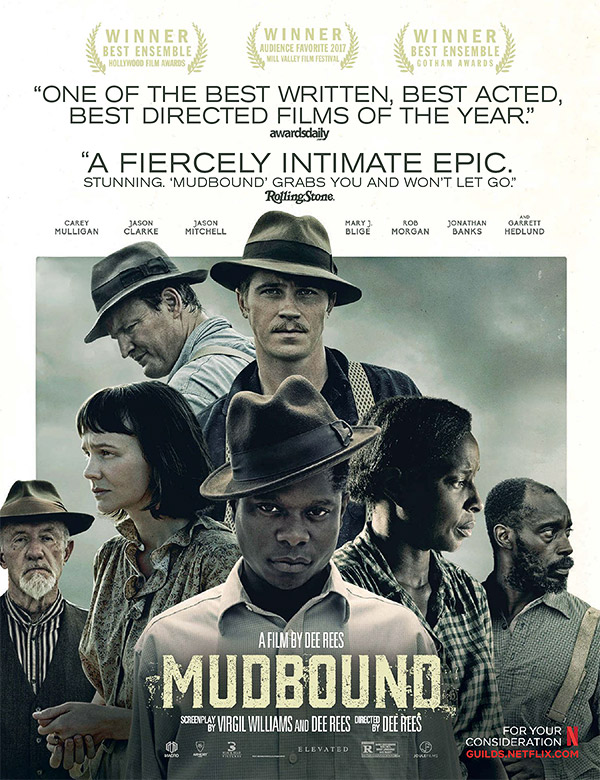
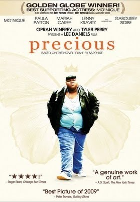

12 Years a Slave (2013)
Overview
Uncompromising portrait of one man's descent into bondage and unyielding will to survive. Harrowing testament to human endurance against systematic dehumanization.
Powerful stories confronting slavery, civil rights, modern racial justice, and the rich tapestry of Black cultural heritage and achievement.
Films confronting the brutal institution of slavery, resistance, and the fight for freedom.
Uncompromising portrait of one man's descent into bondage and unyielding will to survive. Harrowing testament to human endurance against systematic dehumanization.

Bloody revenge fantasy that weaponizes cinema against plantation cruelty. Cathartic explosion of righteous violence against white supremacy.

54th Massachusetts fights for dignity in blood-soaked Civil War battlefields. Monumental tribute to Black soldiers who redefined American valor.
Mixed-race heiress challenges 18th-century British legal hypocrisy. Elegant dismantling of aristocratic racism through courtroom and courtship.

Gordon flees Louisiana chains toward Union lines in visceral survival epic. Raw, relentless pursuit through alligator-infested swamps.

Nat Turner's rebellion ignites 1831 Virginia slave uprising. Brutal confrontation with plantation power structures and moral complexity.
Struggles for justice, equality, and the leaders who shaped the movement.

Transformative journey from street hustler to revolutionary prophet. Monumental biography that captures the evolution of Black consciousness.

Fred Hampton's Panther revolution versus FBI betrayal. Explosive chronicle of state-sponsored assassination of Black radical leadership.

Baldwin's unfinished manuscript becomes searing meditation on America's racial wound. Essential, unflinching examination of Black American experience.

Bryan Stevenson battles Alabama death row injustice. Methodical dismantling of systemic judicial racism through Walter McMillian's wrongful conviction.

Wiley College debate team challenges segregation-era academic supremacy. Intellectual rebellion against Jim Crow intellectual apartheid.

Young Thurgood Marshall defends accused rapist in 1940s Connecticut. Courtroom crucible that forged future Supreme Court justice's racial justice blueprint.

Documentary traces escaped slave's transformation into abolitionist icon. Essential biography of the 19th-century freedom fighter's revolutionary voice.

1960s Durham mock trial unites Black activist and KKK leader. True story of unlikely alliance challenging segregation through deliberative democracy.
Contemporary stories of police brutality, systemic racism, and resistance.

Teen witnesses police killing of childhood friend, ignites community activism. Powerful exploration of survivor's guilt and Black Lives Matter awakening.

Isabel Wilkerson's global caste system research journey. Intellectual odyssey connecting American racism to international oppression frameworks.

Marine veteran demands civilian trial for cop who killed his son. Courtroom confrontation exposing military-police impunity double standard.

Modern scholar trapped in contemporary slavery plantation. Genre-bending horror revealing America's hidden racial gulags.
Raw portraits of urban Black experience, crime, and community survival.

Coming-of-age in South Central amid gang violence and police occupation. Seminal chronicle of Black fatherhood, brotherhood, and systemic containment.

Watts teenager navigates drug trade, robbery, and retaliatory violence. Unflinching descent into hood nihilism without redemption sentimentality.

First date becomes fugitive romance after traffic stop killing. Modern Black Bonnie & Clyde mythology born from routine police encounter.
Intimate stories of Black familial bonds, love, and generational trauma.

Celie's journey from brutalized child to empowered matriarch. Masterpiece of female solidarity triumphing over incest, abuse, and patriarchy.

Mississippi Delta sharecroppers navigate WWII return and racial terror. Interwoven family sagas exposing Jim Crow's postwar persistence.

Chicago family's weekly dinners sustain through cancer, affairs, coma. Vibrant ensemble celebrating Black matriarchal resilience and Sunday rituals.

110-year-old former slave recounts century of Black American struggle. Epic oral history spanning emancipation through Civil Rights era.

16-year-old Harlem teen escapes incestuous mother through literacy. Raw survival story of educational salvation amid extreme domestic violence.

Interconnected Harlem women confront abortion, abuse, abandonment. Stage-to-screen adaptation celebrating sisterhood healing through shared trauma.

Tyler Perry's gun-toting grandma mediates family cancer crisis. Broad comedy tackling abortion, abuse through melodramatic family intervention.
Stories of Black excellence in science, business, law, and culture.

NASA's Black female mathematicians propel space race against segregation. Triumphant reclamation of erased contributions to American scientific supremacy.

Pianist Shirley travels Deep South with Italian driver using Negro Motorist Green Book. Road trip buddy comedy softens segregation-era racial reconciliation.

1960s Black entrepreneurs build banking empire circumventing redlining. Smart financial thriller exposing housing discrimination's economic stranglehold.

Homeless salesman chases stockbroker dream with young son. Inspirational bootstrap narrative grounded in authentic father-son survival struggle.
Preserving and celebrating African American history, music, and blaxploitation.
A poetic triptych tracing a young Black man's quiet wrestle with identity, sexuality, and masculinity in Miami's shadows. Lyrical brilliance illuminates hidden corners of the Black experience with tender precision.

Rudy Ray Moore creates blaxploitation legend through independent hustle. Joyous celebration of 1970s Black cinema entrepreneurship and cultural defiance.

Gullah Geechee family prepares 1902 Sea Islands migration to mainland. Lyrical, nonlinear preservation of African diasporic spiritual traditions.

Released pimp seeks revenge on crime syndicate framing him for drugs. Cult classic blaxploitation featuring kung fu, bad dialogue, revolutionary swagger.

South Central stoners evade drug dealer on neighborhood block. Hilarious snapshot of 90s Black suburban comedy gold with quotable dialogue mastery.

Pimp, dealer, singer uncover corporate conspiracy controlling Black community. Blaxploitation revival with social commentary and genre subversion.
Courtroom battles against racial injustice in the American justice system.

Mississippi father kills daughter's rapists, faces all-white jury. Grisham thriller confronts Southern racial double standards in capital punishment.

British asylum seekers face racist immigration tribunal. Contemporary drama exposing modern European racial exclusion mechanisms.